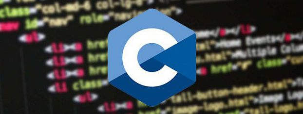
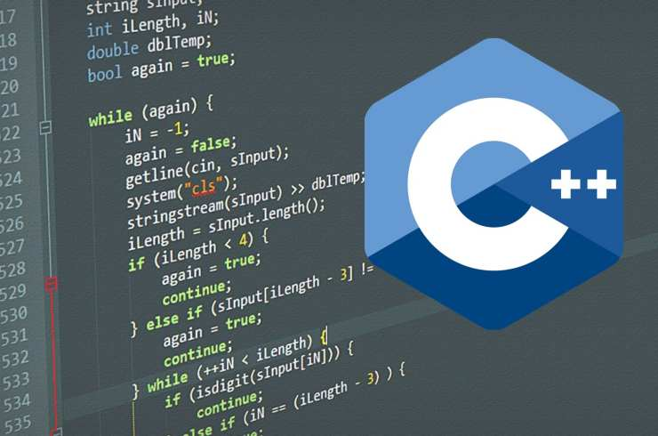
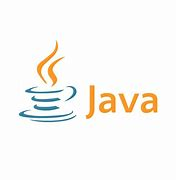
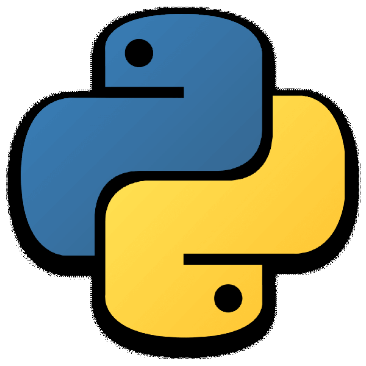
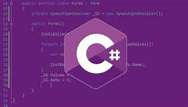
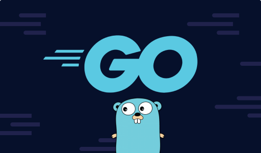
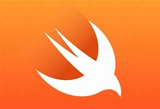

Temas:
¿Cuantos lesnguajes de programacion hay?
De acuerdo con algunas fuentes, hay miles de lenguajes de programación. El número específico depende de cómo se cuenten, ya que algunos lenguajes pueden ser variantes de otros, o pueden haber sido creados para proyectos o investigaciones limitadas. En plataformas como GitHub o bases de datos de lenguajes, podemos encontrar más de 700 lenguajes distintos mencionados, pero esta cifra puede variar según los criterios de clasificación.
- C: Un lenguaje de programación de propósito general que ha sido ampliamente utilizado y ha influido en el diseño de muchos otros lenguajes.
- C++: Una extensión del lenguaje C que agrega características de programación orientada a objetos.
- Java: Un lenguaje de programación de propósito general diseñado para ser independiente de la plataforma, lo que significa que el código Java puede ejecutarse en diferentes sistemas operativos sin modificaciones.
- Python: Un lenguaje de alto nivel con una sintaxis simple y legible, utilizado para una variedad de propósitos, incluyendo desarrollo web, ciencia de datos, automatización y más.
- C# (C Sharp): Un lenguaje de programación desarrollado por Microsoft, comúnmente utilizado en el desarrollo de aplicaciones para la plataforma Windows y en el desarrollo de juegos con el motor Unity.
- Ruby: Un lenguaje de programación interpretado y de alto nivel, conocido por su elegancia y facilidad de uso.
- Go (Golang): Un lenguaje de programación desarrollado por Google, diseñado para ser eficiente y fácil de leer.
- Swift: Un lenguaje de programación desarrollado por Apple para crear aplicaciones iOS y macOS.







